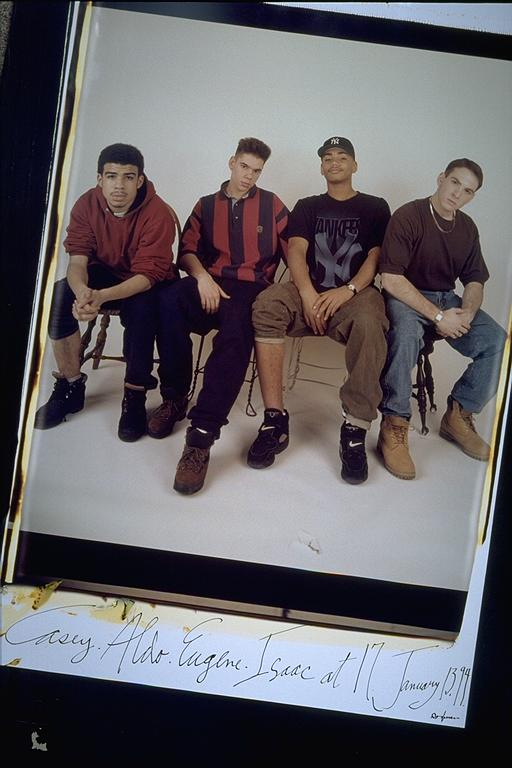

Pals: Boys Who Grew Up Together
elsadorfman.com/pals
Aldo: Isaac looks like a stand in this picture, ha, ha. Really, not only is it that his dressing really clashes with the rest of us, but also his deamenor looks really different. He looks a bit timid which is uncharacteristic for him in pictures. You know the funny thing is you never even notice how much clothes clash, until you take a picture. I'm sure none of us even noticed the difference until after the picture.

elsad@comcast.net